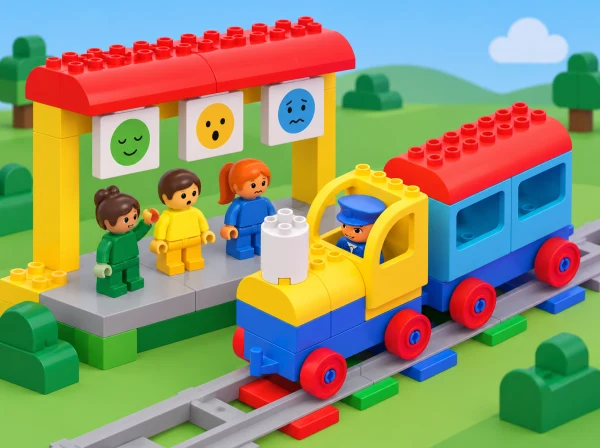

Com se sent el personatge del tren?
🏷️ Convivència i ciutadania
🌱 Situació, repte i intenció
La història no és una prova per descobrir emocions reals: una expressió dibuixada no permet saber amb certesa com se sent una persona. El grup pot proposar lectures diferents, basar-les en pistes del relat i decidir quines formes de suport tindrien sentit per al personatge.
🎯 Aprenentatges i vocabulari
- Ordenar esdeveniments d’un conte i diferenciar allò que passa d’allò que interpretem.
- Explorar amb l’app com es configuren els comportaments vinculats als maons d’acció.
- Observar el tren en passar per maons de cada color i registrar el comportament configurat.
- Reconéixer emocions possibles en una figura de ficció sense assignar-ne una a cada color.
- Crear models i una història col·lectiva sobre amistat, descans i cura quotidiana.
- Explicar una decisió de configuració amb una pista narrativa i una observació del tren.
La lliçó oficial recomana paraules com trist, enfadat, esternudar, saludable i jugar a fet i amagar. Introduïu-les només si són útils per al conte i permeteu alternatives com «necessita una pausa» o «vol que l’acompanyen».
🧰 Materials i preparació
El pla LEGO està dissenyat per a l’app Coding Express i grups de fins a quatre infants. Prepareu un set Coding Express, dispositiu amb l’app compatible, una via curta, figura/personatge de la dotació si n’hi ha, targetes de cada maó d’acció i materials de construcció lleugers per als models. Comproveu abans de la sessió que l’app permet canviar els comportaments i que el tren i els maons responen com espereu.
Si una versió de l’app no inclou la personalització, feu la part de configuració amb targetes i identifiqueu-la com a simulació en paper.
Prepareu una tira de quatre vinyetes per al conte, targetes amb la mateixa paleta neutra i expressions diferents, i una taula: «color/maó», «configuració triada», «què ha fet el tren», «moment del relat». Roteu els torns de qui configura, col·loca el maó, observa, narra i construeix. Amb una sola caixa, mentre un equip experimenta, la resta ordena el conte amb figures o pictogrames.
📅 Seqüència didàctica
Inventem la història de l’erugueta
Fase 1 · Activem i prediem
Presenteu un personatge fictici que recorre l’hort del centre. Al principi juga a buscar ombres i fulles; després d’una estona, s’atura, seu i busca companyia. Pregunteu què creuen que està passant, sense demanar que ningú parle d’una experiència pròpia.
Fase 2 · Explorem i construïm
El grup ordena quatre vinyetes i separa un fet observat («s’ha assegut») d’una interpretació possible («potser està cansada», «potser espera algú»). Afegiu diverses hipòtesis i pregunteu quina altra pista ajudaria a entendre la història.
Fase 3 · Expliquem i registrem
Trieu dos moments que el tren puga representar i anoteu quina acció observable del model podria correspondre a cada escena. Manteniu separada la configuració tècnica de la interpretació narrativa.
Fase 4 · Apliquem i millorem
Decidiu com acaba el conte: amb una pausa, una invitació a jugar o un espai tranquil. No hi ha una resposta emocional correcta. Com a suport, proporcioneu vinyetes amb pictogrames; com a ampliació, creeu una interpretació diferent de la mateixa escena i justifiqueu-la amb una pista nova.
Fase 5 · Comprovem i reflexionem
Configurem i observem el tren
Fase 1 · Activem i prediem
Construïu un tram curt de via i col·loqueu-hi un maó d’acció de cada color disponible. Abans de cada prova, trieu quin comportament espereu i quin moment del conte podria representar.
Fase 2 · Explorem i construïm
Exploreu primer els botons de l’app i observeu com controlen el personatge. A continuació, canvieu el comportament configurat d’un maó i passeu el tren per la via. Canvieu el rol d’operació perquè més d’una persona puga provar-ho.
Fase 3 · Expliquem i registrem
Anoteu el canvi fet, la predicció i què ha fet el tren. Compareu la configuració de l’app, el senyal físic i el resultat observat; repetiu amb un altre maó.
Fase 4 · Apliquem i millorem
Decidiu quin moment del conte pot representar cada comportament. Si l’app no ofereix la funció, mostreu amb targetes com es configuraria i feu la passada com una prova diferent; anoteu que el comportament no s’ha canviat dins de l’app. No afirmeu que el tren ha guardat una configuració si no ho heu verificat amb aquesta versió.
Fase 5 · Comprovem i reflexionem
Un mateix color pot rebre comportaments diferents. No el presenteu com si sempre significara «trist» o «content»: la configuració és una regla del sistema i el sentiment és una interpretació del personatge, no un diagnòstic. Quina dada de la prova és observable i quina part és lectura narrativa?
Construïm models i conten entre totes
Fase 1 · Activem i prediem
Recupereu les vinyetes i els registres anteriors. Decidiu en quin moment de la història hauria d’aparéixer cada comportament configurat i expliqueu què espereu veure.
Fase 2 · Explorem i construïm
En equips, construïu dos o tres escenaris amb peces, cartó o pictogrames per a representar moments diferents. Ajunteu-los en una seqüència amb inici, canvi i final.
Fase 3 · Expliquem i registrem
Un equip narra i un altre comprova si el tren passa pel maó indicat i si el model construït ajuda a entendre el relat. Anoteu qualsevol diferència entre la predicció i l’acció observada.
Fase 4 · Apliquem i millorem
Reviseu l’ordre de les escenes, la ubicació dels maons o la configuració si el relat no s’entén. Parleu de què podria fer una amistat quan el personatge fictici està cansat o vol companyia: oferir repòs, preguntar què vol o compartir el joc. Accepteu més d’una resposta i no convertiu les estratègies en obligacions per a l’alumnat.
Fase 5 · Comprovem i reflexionem
🧪 Evidències i avaluació
Recolliu les vinyetes, les interpretacions, la taula de configuració, models i relat final. Observeu si l’infant:
- ordena esdeveniments i diferencia observació d’interpretació;
- segueix un torn de configuració i identifica què canvia a l’app;
- associa una observació concreta del tren amb un maó d’acció;
- representa més d’un moment narratiu sense fixar una emoció a un color;
- escolta una interpretació alternativa o crea un canal propi per a expressar la seua idea;
- proposa una forma de companyia o cura adequada al personatge del relat.
Feu anotacions descriptives i breus («ha canviat la configuració blava i ha vist que el tren…») en lloc de qualificar l’expressió emocional de l’infant. L’app pot emmagatzemar configuracions per representar el comportament dels maons: tracteu-ho com a dades del programa, no com a dades personals o afectives.
♿ Participació, accessibilitat i seguretat
Oferiu un conte completament fictici, un final neutre o l’opció d’observar en silenci. Useu pictogrames, targetes de text, peces tàctils i expressions en el mateix color de paper per a evitar codis cromàtics rígids. Anticipeu sons, reduïu el volum o feu l’activitat sense so. Un infant pot participar com a narrador/a, constructor/a, operador/a, observador/a o responsable de les targetes.
Feu les proves amb via curta i tren a baixa velocitat. Manteniu els dits fora del tren i dels maons mentre es mou i pareu el model abans de reconfigurar-lo. No recolliu emocions, històries familiars ni informació personal de l’alumnat.
🔗 Referents i adaptació
Adapta Character – Caterpillar, lliçó 5 de 8 de Coding Express, de 30–45 minuts per a PreK–K i dissenyada per a grups de fins a quatre infants. El pla oficial presenta una erugueta de colors amb moments de joc, cansament, descans i malaltia; construeix el personatge i la via; explora els botons de l’app i un maó de cada color; canvia els comportaments dels maons en l’app;
conversa sobre emocions, crea models per a representar-les i combina’ls en una història sobre amistat i cura. També avalua si l’alumnat reconeix el canvi de comportament i comprén que l’app guarda dades per representar-lo. El conte de l’hort, les targetes, les bastides, les alternatives d’accés i la cautela sobre interpretacions emocionals són propis; la personalització real es verifica amb l’app del centre.